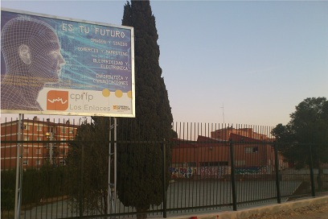

El centro de “Los Enlaces” comenzó a funcionar en el curso 1985-86 como centro de Formación Profesional. Su puesta en marcha responde a la preocupación de la Administración (Ministerio de Educación y Ciencia, por entonces) por expandir este tipo de enseñanzas en Zaragoza y coincide con la apertura de otros centros de F.P en la ciudad.
Se impartían las enseñanzas correspondientes a Primer Grado de las Ramas de Peluquería, Imagen y Sonido, Administrativo y Electricidad-Electrónica. En Segundo grado Medios audiovisuales, Informática de Gestión e Instrumentación y control. (Enseñanzas en Régimen General y Especializadas).
A partir del curso 1996-97 se inicia una nueva andadura con la implantación de la LOGSE. Impartimos desde entonces ESO, Bachillerato y Formación Profesional (Familias Profesional de Electrónica, Comercio y Marketing, Informática, y Comunicación, Imagen y Sonido). Un nuevo reto que el Instituto emprende con obras de remodelación para dar cabida a los nuevos alumnos y adaptarlo a las nuevas enseñanzas del Curriculum.
La relación con las empresas de la zona, heredada de las antiguas "Prácticas en alternancia", toma un nuevo rumbo, al entrar a formar parte como un módulo más de las nuevas enseñanzas de Formación Profesional denominado Formación en Centros de Trabajo. Aumenta así el número de empresas con las que tenemos convenios de colaboración para la formación de nuestros alumnos de formación profesional, derivando esta situación a que muchas empresas confíen en nuestra bolsa de trabajo para la selección de sus trabajadores.
En el curso escolar 99-00 se inicia la participación en los Proyectos Educativos Europeos. Participamos o hemos participado en intercambios escolares con Francia, Italia, Dinamarca y con Finlandia. También se han realizado intercambios de Formación Profesional acogidos al programa Petra y Leonardo. En el año 2008 el centro apuesta por el programa Erasmus, y obtiene la Carta Erasmus. Desde el curso 2008-2009 los alumnos acceden a Becas Eramus para realizar parte de sus estancias formativas en empresas de diferentes paises (Alemania, Francia, Inglaterra, Italia...)
Desde el año 2007 el centro posee la certificación en calidad de todas las enseñanzas de formación rprofesional según las normas ISO 9001:2000. Nuestra Política de Calidad quiere ser un reflejo de las directrices que rigen el centro cuya meta fundamental es la mejora continua en la prestación de nuestro servicio.
Desde el curso 2005/06, somos uno de los cuatro centros experimentales de Enseñanza Integrada en Aragón en FP, en la rama de Logística y Comunicación. Impartimos Formación Para el Empleo, desde la formación reglada de las familias descritas, hasta formación para empleados y desempleados pasando por formación espefícia y diseñada para las empresas. Llevamos además en marcha diversos proyectos de innovación, como la creación de un vivero de empresas para nuestros alumnos de Ciclos Formativos.